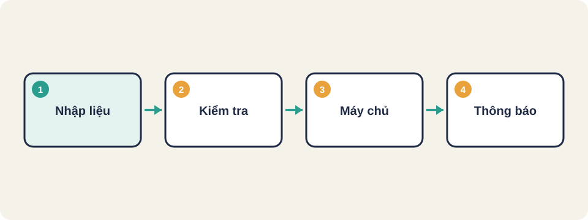
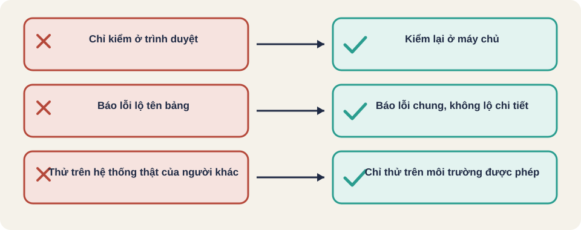

Hình vẽ gốc, dùng để minh họa thứ tự các bước chính của bài.
Kiểm dữ liệu đầu vào, thông báo lỗi, phiên đăng nhập và các lỗi bảo mật thường gặp như XSS và SQL injection.

Hình vẽ gốc, dùng để minh họa thứ tự các bước chính của bài.
Thuật ngữ trong slide này: SQL injection: Lỗ hổng khi đầu vào của người dùng được ghép thẳng vào câu truy vấn cơ sở dữ liệu, làm đổi nghĩa câu truy vấn.
Yêu cầu: tối thiểu 10 ký tự, có chữ và có số
"abc123" → từ chối (ngắn)
"abcdefghi1" → chấp nhận
"abcdefghij" → từ chối (không có số)Sau khi đăng xuất, quay lại bằng nút Back không được vào trang riêng tư. Phiên hết hạn sau một thời gian không hoạt động.
Mọi kiểm tra ở trình duyệt có thể bị bỏ qua bằng công cụ gửi yêu cầu trực tiếp. Vì vậy mỗi quy tắc quan trọng (độ dài, định dạng, quyền) cần được kiểm lại ở máy chủ, và tester nên thử gửi yêu cầu trái quy tắc trực tiếp.
Kiến thức chung, chưa đối chiếu nguồn gốc.
| Nên | Không nên |
|---|---|
| "Email hoặc mật khẩu không đúng" | "Tài khoản này không tồn tại" (lộ danh sách tài khoản) |
| "Đầu vào không hợp lệ, tối đa 100 ký tự" | Hiện câu truy vấn SQL hoặc tên bảng |
| Ghi log chi tiết ở máy chủ | Hiện stack trace cho người dùng |
Kiến thức chung, chưa đối chiếu nguồn gốc.
Kiến thức chung, chưa đối chiếu nguồn gốc.

XSS (cross-site scripting)
SQL injection
IDOR (tham chiếu đối tượng không an toàn)
Mã trạng thái HTTP (401, 403, 400, 429)
Đầu vào cần kiểm ở cả phía trình duyệt lẫn máy chủ. Kiểm ở trình duyệt chỉ để trải nghiệm tốt hơn, không đủ để bảo mật.
Kiểm đầu vào ở trình duyệt chỉ để trải nghiệm tốt hơn. Bảo mật phải kiểm ở máy chủ, vì người tấn công không đi qua giao diện.
Kiến thức chung, chưa đối chiếu nguồn gốc. OWASP Top Ten Cheat Sheet trên wiki.owasp.org không đọc được khi soạn bài này.
Nguồn: github.com/PaulWaltersDev/FreeLearningResourcesForSoftwareTesters, mục "Security and Penetration Testing". Tìm tên tài liệu trong repo để lấy liên kết.